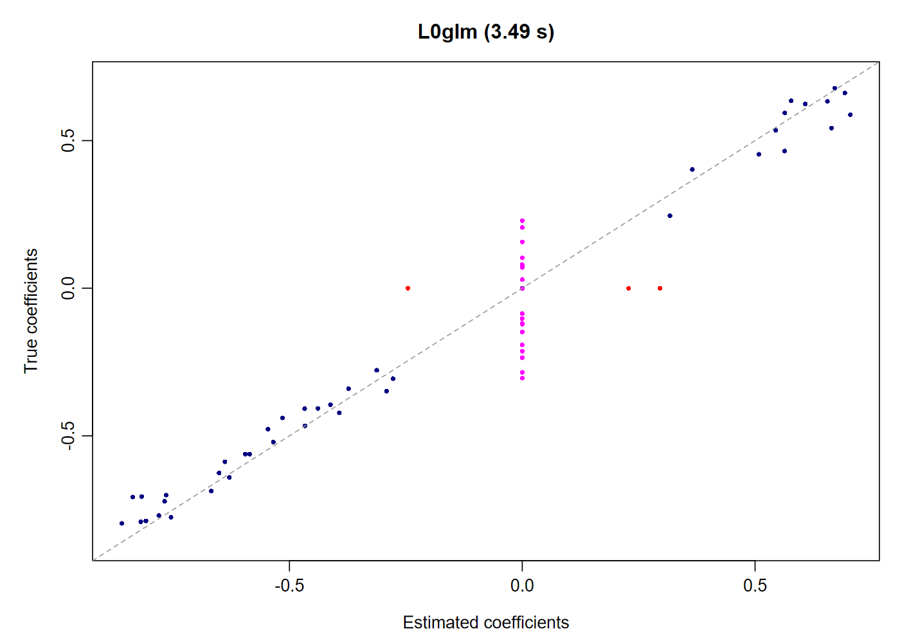
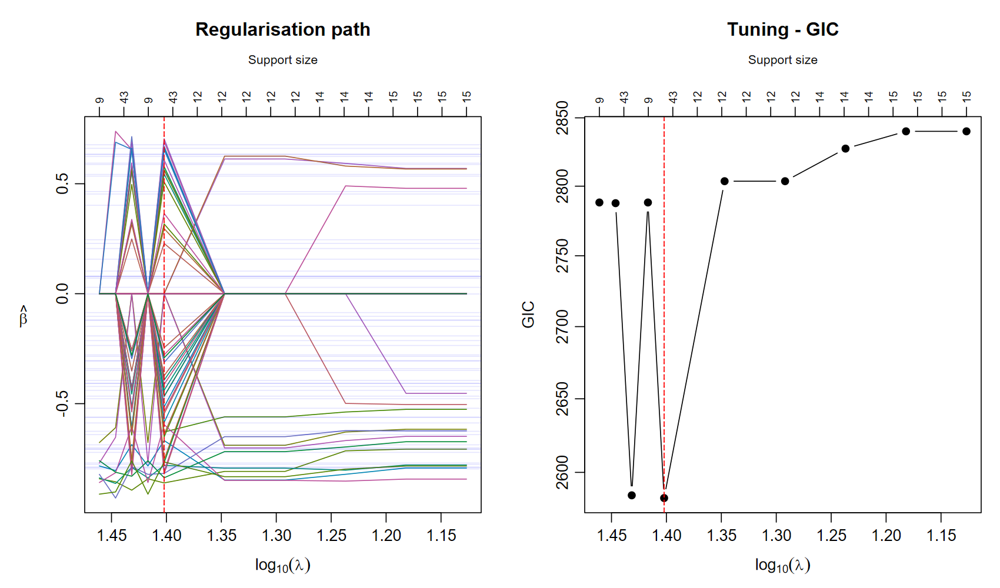

L0glm fits sparse generalized linear models using adaptive ridge and IRLS. The same interface covers ordinary GLMs, negative binomial counts, joint multinomial classification and Cox survival models. Dense and sparse designs, multiple responses and very large predictor sets share one fitting interface.
Install
install.packages("remotes")
remotes::install_github("tomwenseleers/L0glm", subdir="L0glm")
library(L0glm)Windows source installation requires Rtools.
Fit a sparse model
Here 60 positive or negative effects are hidden among one million predictors with 500 observations. A single call fits the model using the package defaults. The dense design occupies about 4 GB; data generation is excluded from the fitting time.
set.seed(123)
n <- 500L
p <- 1000000L
X <- matrix(rnorm(n*p), n, p)
active <- sample.int(p, 60L)
beta <- numeric(p)
beta[active] <- runif(60L, -.8, .8)
set.seed(1)
y <- as.numeric(X[, active] %*% beta[active]) + rnorm(n)
system.time(fit <- L0glm.fit(X, y, family=gaussian()))
L0glm.metrics(fit, beta_true=beta)[
c("gic", "TP", "FP", "FN", "TN", "F1_score", "MCC")]| Seconds | GIC | TP | FP | FN | TN | F1 | MCC |
|---|---|---|---|---|---|---|---|
| 3.49 | 2583 | 40 | 3 | 20 | 999937 | 0.777 | 0.787 |
The corresponding support confusion matrix is:
| Ground truth | Selected | Excluded |
|---|---|---|
| Nonzero effects | 40 TP | 20 FN |
| Zero effects | 3 FP | 999937 TN |

The true coefficients are used to evaluate recovery. Fitting uses
only X and y. Returned coefficients retain all
one million rows in a sparse matrix. The default automatic screening
uses the available physical cores; set screen.nthreads=1L
for serial screening.
Tune a regularization path
The preset already gives a strong sparse model. Detailed tuning is available when desired, and often selects a value close to the preset. In this example, the best value over the displayed ten-value GIC grid is exactly the preset.
tuned <- L0glm.tune(X, y, family=gaussian(), tune="gic",
nlambda=10L, prop_range=.25, coefs.true=beta, plot=TRUE)
c(lambda_best=tuned$lambda_best, lambda_preset=tuned$lambda_preset)
The graph uses a reversed log10(lambda) axis, with
strong regularization on the left and support sizes above the panels.
prop_range=.25 focuses on the preset; use
prop_range=1 to explore the full numerical path. For
five-fold cross-validation use tune="cv", nfolds=5L. See model selection and cross-validation for a
larger signal-rich example, confidence bars and the one-standard-error
model.
Predict and inspect
predict(fit, X[1:5, , drop=FALSE])
summary(fit)
c(logLik=as.numeric(logLik(fit)), AIC=AIC(fit), BIC=BIC(fit), GIC=GIC(fit))
predict(tuned$fit_best, X[1:5, , drop=FALSE])fitted(fit) returns fitted means for the training
observations; predict() applies the model in the original
predictor coordinates.
Choose a workflow
| Task | Main function |
|---|---|
| One fast preset fit | L0glm.fit(X, y, family=...) |
| Tune an information criterion | L0glm.tune(..., tune="gic") |
| Cross-validate prediction deviance | L0glm.tune(..., tune="cv", nfolds=5) |
| Compare sparse regression methods | sparseglm() |
| Score predictions and support recovery | L0glm.metrics() |
| Control high dimensional prescreening |
screen="auto", "SIS" or
"ISIS"
|
The default screen="auto" enables ISIS exactly when
p_eligible > 10*n. Here n is the number of
training rows, and p_eligible excludes mandatory terms and
predictors excluded by zero starts in every response channel.
L0glm.tune() applies this rule independently within each
full-data or CV training fit, without a separate minimum sample size or
predictor count.
Continue with SIS / ISIS screening, single and multichannel deconvolution, weights and validation, or the negative binomial, multinomial and Cox examples.